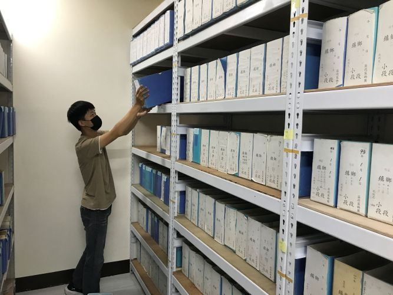
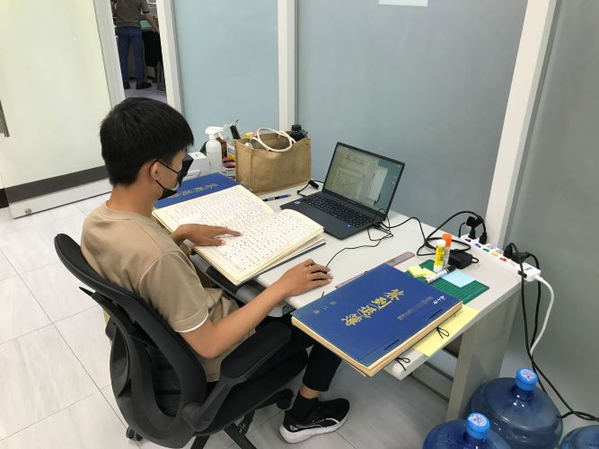
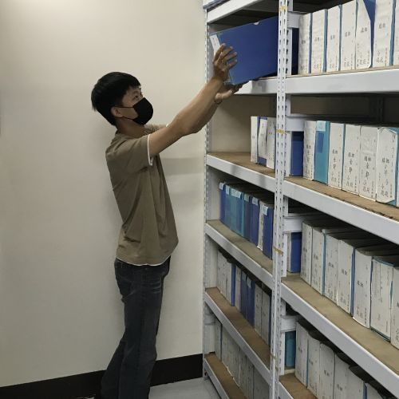

PUBLIC SECTOR / 2025 屏東縣公部門暑期工讀
潮州地政事務所 第三課
協助地籍資料整理、檔案盒標籤更換、紙本與電子檔校對，以及資料掃描。

整理地價區段圖，依據各年份、地區、段別分類，並將老舊模糊的圖盒標籤做更換。

完成校對簽到簿的掃描檔，比對紙本與電子檔是否完整、無缺漏。
02 / EXPERIENCE
從地籍檔案整理到校園職涯活動支援，我在實際工作裡練習把資料、流程與細節整理到位。

PUBLIC SECTOR / 2025 屏東縣公部門暑期工讀
協助地籍資料整理、檔案盒標籤更換、紙本與電子檔校對，以及資料掃描。

整理地價區段圖，依據各年份、地區、段別分類，並將老舊模糊的圖盒標籤做更換。

完成校對簽到簿的掃描檔，比對紙本與電子檔是否完整、無缺漏。
CAMPUS / 校內工讀
在校園職涯活動與行政流程中，協助現場支援、文書與資料整理。
PUBLIC SECTOR / 2026 屏東縣公部門暑期工讀
協助地籍資料整理、檔案掃描、修復。